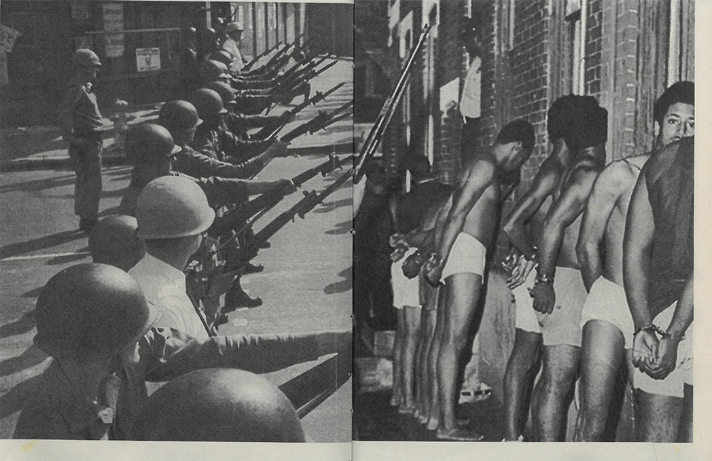
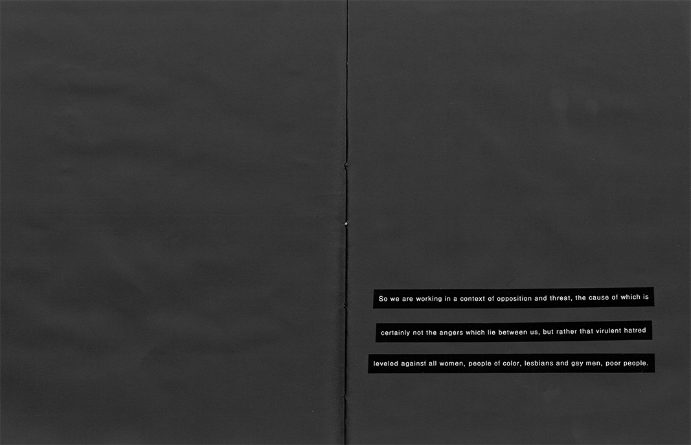
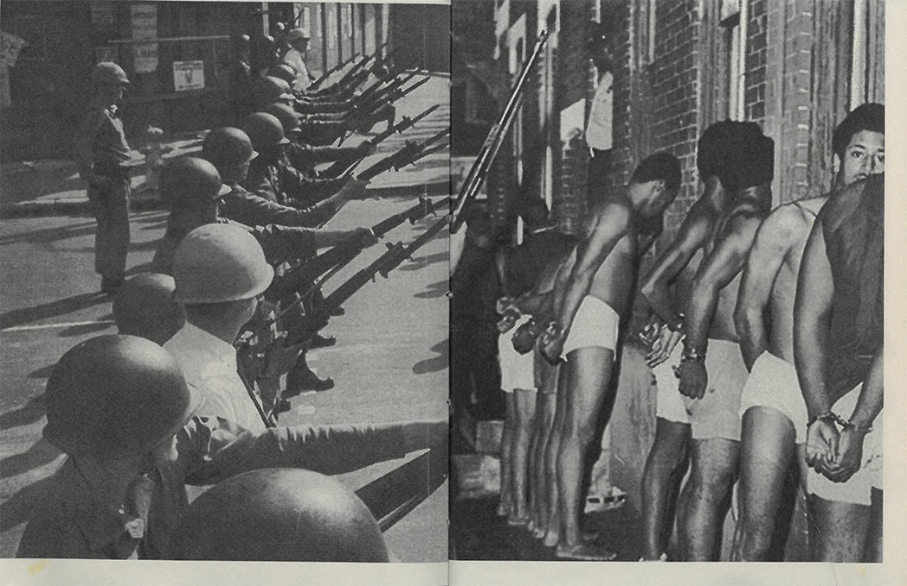
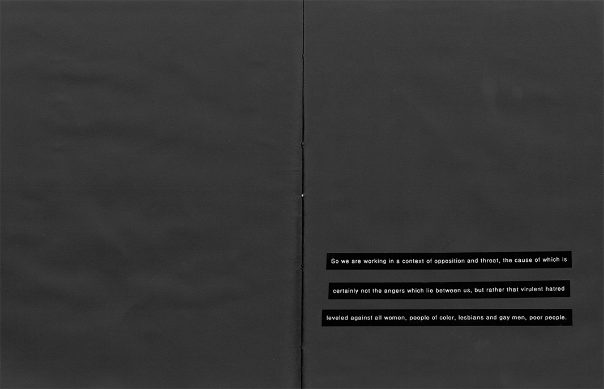
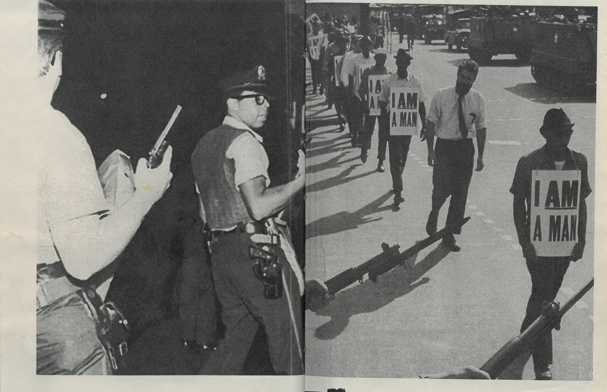
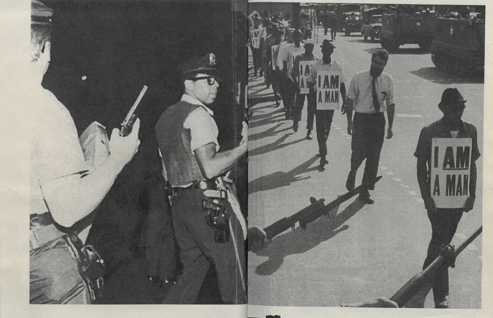
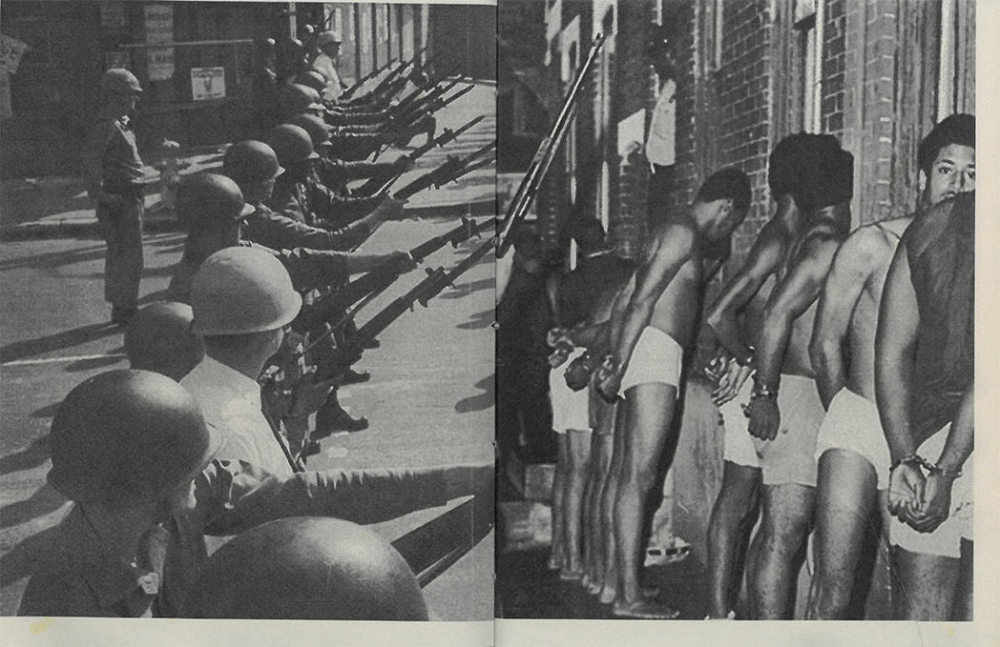
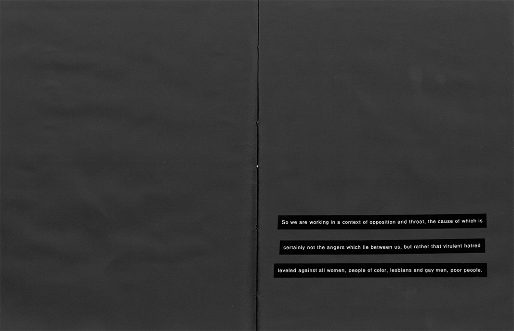
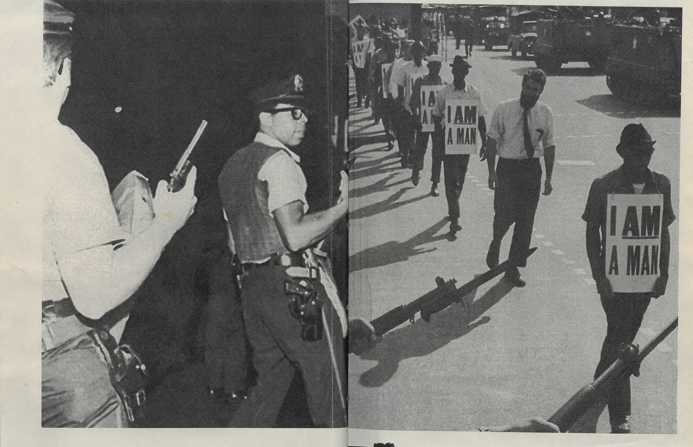

 



24 page 8.5" x 11" zine, 2018
Using Audre Lorde’s The Uses of Anger and historical photos, Anger//Hatred explores the meaning of violence, anger, and hatred in a context of oppression.


